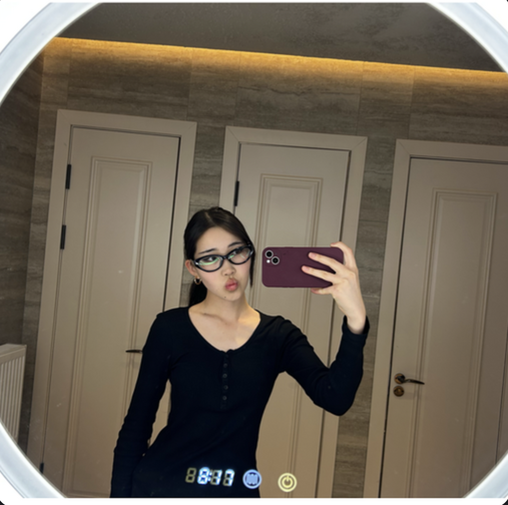
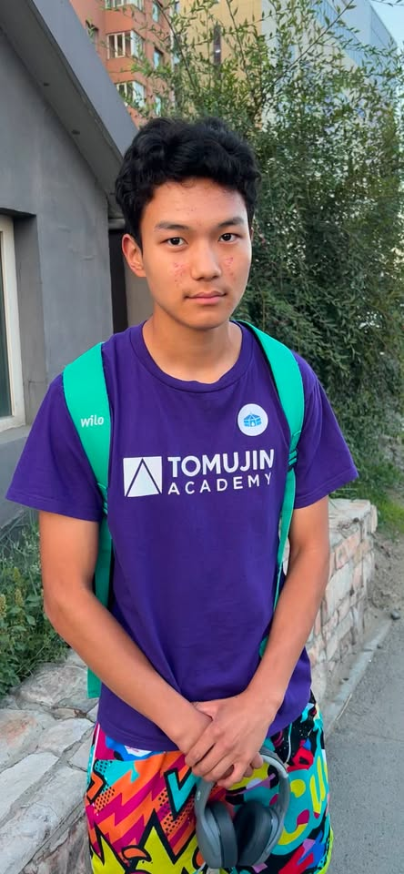
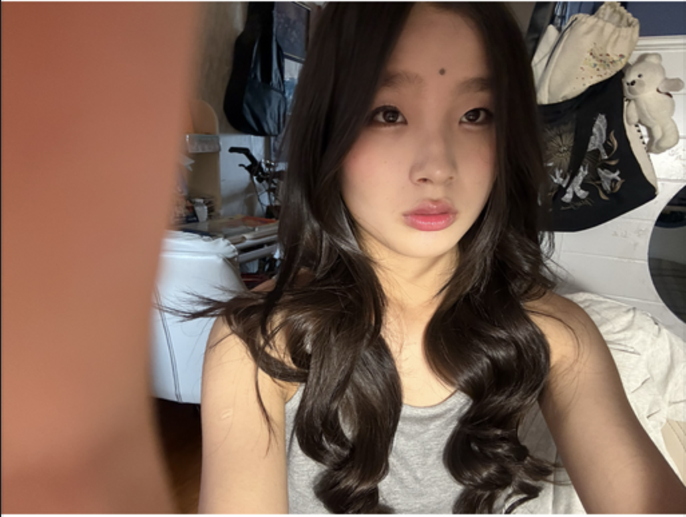

УС ЦЭВЭР ХАРАГДАЖ БАЙНА.
Гэхдээ үргэлж тийм биш.
Дусал нь Баянхошуу дахь айл өрхүүдийн ундны ус хадгалдаг саванд агуулагдах хар тугалгын эрсдэлийг судалж, аюулгүй шийдэл боловсруулж буй залуучуудын баг юм.
Энэ дусалд хар тугалга байж болно.
Зарим хямд, чанаргүй хуванцар сав үйлдвэрлэхэд хар тугалга суурьтай тогтворжуулагч ашигладаг. Ус удаан хугацаагаар хадгалагдах тусам энэ бодис саваас усанд аажмаар шингэх эрсдэлтэй болдог — ямар ч мэдэгдэхүйц шинж тэмдэггүйгээр.
Жижиг баг, бодит ахиц.
БАГИЙН ГИШҮҮН — ТУС БҮР ӨӨРИЙН ЧИГЛЭЛЭЭР АЖИЛЛАДАГ
АЙЛ ӨРХӨД ХИЙСЭН ХЭЭРИЙН ЯРИЛЦЛАГА, СУДАЛГАА
ГОЛЛОН СУДАЛЖ БУЙ ХОРОО — СХД 5-Р ХОРОО
ЭДГЭЭР ТОО ХЭМЖЭЭ НЬ БАГИЙН АЖЛЫН ЯВЦЫГ ТУСГАСАН БӨГӨӨД АНАГААХ УХААНЫ ЭМГЭГ СУДЛАЛЫН ХЭМЖИЛТ БИШ.
БАЯНХОШУУ, УЛААНБААТАР
Манай хээрийн судалгаа Сонгинохайрхан дүүргийн 5-р хороо, Баянхошуу орчимд төвлөрдөг — ундны ус зөөвөрлөж, гэртээ саванд хадгалдаг өрхүүд түгээмэл орших бүс.
Судалгаанаас бодит шийдэл хүртэл.
Дөрвөн багийн гишүүн, дөрвөн чиглэлээр зэрэгцүүлэн ажилладаг.
Эрсдэлийн үнэлгээ
Айл өрхийн ус хадгалах сав, савны төрлийг судалж, эрсдэлийн зураглал гаргана.
Шүүгчийн загвар
Судалгааны үр дүнд тулгуурлан хямд, хэрэглэхэд хялбар шүүгчийн анхны хувилбарыг гаргана.
Мэдээллийн сан
Хар тугалгын эрсдэл болон шүүгчийн талаарх мэдээллийг ойлгомжтой хүргэдэг веб хуудас.
Мэдээлэл түгээх
Social media контент бэлтгэж, компаниудтай хамтран Баянхошуугийн өрхүүдэд хүрнэ.
Судалгаанаас олж мэдсэн зүйлс.
Хээрийн судалгаа, эх сурвалжийн мэдээлэлд тулгуурлан бэлтгэсэн товч нийтлэлүүд.
01
Канистер бол ундны сав биш
+
Канистер бол ундны сав биш
Баянхошуу орчимд ундны ус зөөвөрлөхөд түлш, тос, химийн бодис зөөвөрлөхөд зориулагдсан хуучин канистеруудыг дахин ашиглах явдал элбэг тохиолддог. Эдгээр сав нь өөр зориулалтаар, өөр төрлийн хуванцараар хийгддэг бөгөөд ундны усанд тохиромжтой эсэхийг шалгасан байдаггүй.
Хоёр эрсдэл давхардаж болно: нэгд, өмнөх агуулгын үлдэгдэл (жишээ нь түлшний тос) бүрэн угаагдаагүй байх; хоёрт, сав өөрөө хямд, чанаргүй хуванцраар хийгдсэн бол хар тугалга суурьтай тогтворжуулагч агуулж болно. Хоёулаа удаан хугацаагаар ус хадгалахад аажмаар шингэх эрсдэлтэй.
Хамгийн энгийн зөвлөмж: аливаа саванд «food grade» буюу хүнсэнд зориулагдсан гэсэн тэмдэглэгээ байгаа эсэхийг шалгаж, өөр зориулалттай байсан савыг ундны усанд дахин ашиглахаас зайлсхийх нь зүйтэй.
02
Хар тугалга: юу вэ, яагаад аюултай вэ?
+
Хар тугалга: юу вэ, яагаад аюултай вэ?
Хар тугалга (Pb) нь байгальд байдаг хүнд металл бөгөөд урьд нь будаг, хоолойн систем, бензин зэрэгт өргөн ашиглагдаж байсан. Өнөөдөр ч зарим хямд хуванцар бүтээгдэхүүний тогтворжуулагчид агуулагдсаар байна.
Дэлхийн Эрүүл Мэндийн Байгууллагын мэдэгдснээр, хар тугалгын өртөлтийн «аюулгүй» гэж тооцогдох доод хэмжээ гэж байдаггүй — өөрөөр хэлбэл бага хэмжээгээр удаан хугацаанд өртөх нь ч эрсдэлтэй хэвээр байдаг. Тэр дундаа хүүхдийн бие махбодид илүү мэдрэмтгий нөлөөлдгийг судалгаанууд харуулдаг.
Дусал төслийн хувьд бид энэ эрсдэлийг эмнэлгийн оношилгоо хийхгүйгээр, харин угтвар сэргийлэлт — өөрөөр хэлбэл эрсдэлтэй сав хэрэглэхээс өмнө таних, зайлсхийх боломж олгох — талаас нь авч үздэг.
03
Гэртээ юу шалгах вэ?
+
Гэртээ юу шалгах вэ?
Хээрийн судалгаандаа тулгуурлан бид өрхүүдэд ус хадгалах саваа шалгахдаа анхаарах цөөн энгийн зүйлийг зөвлөж байна. Эдгээр нь эмнэлгийн шинжилгээ биш — гэхдээ эрсдэлийг бууруулах анхны алхам болно.
Сав нь анх өөр зүйл (түлш, тос, химийн бодис) хадгалахад зориулагдсан уу? Хэрэв тийм бол ундны усанд дахин ашиглахгүй байх нь дээр. Сав нарны шууд тусгалд удаан байрладаг уу? Дулаан, хэт ягаан туяа хуванцрыг илүү хурдан задалдаг. Сав хэдэн жил хэрэглэгдсэн бэ, ан цав, өнгө өөрчлөгдсөн үү? Эдгээр нь бүгд сэлбэх шаардлагатай гэсэн шинж тэмдэг.
Хэрэв эрүүл мэндийн тодорхой асуудал байгаа эсвэл усны шинжилгээ хийлгэхийг хүсвэл, эмнэлгийн болон холбогдох мэргэжлийн байгууллагатай холбогдохыг зөвлөж байна — энэ нийтлэл түүнийг орлохгүй.
Tomujin Academy-гийн дэмжлэгтэй, 5 хүний баг.
Хүн бүр судалгаа, загварчлал, платформ, олон нийттэй харилцах ажлыг зэрэг гүйцэтгэдэг.
Марал
БАГИЙН АХЛАГЧАриунжаргал
МАРКЕТИНГИвээл
ЗАГВАРЧЛАЛМичидмаа
МАРКЕТИНГСоёмбо
ВЕБ ХӨГЖҮҮЛЭЛТТөслийг удирдаж, Улсын Нийтийн Эрүүл Мэндийн Төвийн Токсикологийн тасагтай хамтран судалгааны чиглэлийг тодорхойлно.

Social media дээр тавих reel, post-уудад шаардлагатай судалгааг хийж, контент бэлтгэдэг.

Багийн судалгаанд үндэслэн шүүгчийн хэлбэр, хэмжээг тооцоолж, анхны загварыг зохион бүтээдэг.

Social media дээр тавих reel, post-уудад шаардлагатай судалгааг хийж, контент бэлтгэдэг.

Хар тугалгын шүүгчийг танилцуулах веб хуудсыг хөгжүүлж, холбогдох судалгааг хийдэг.
Нэг дусал ч гэсэн үнэн байх ёстой.
Судалгааны явц, шүүгчийн загварын шинэчлэл, олон нийтийн үйл ажиллагааны талаарх мэдээллийг Instagram хуудсаараа дамжуулан хуваалцдаг.
Компаниудад
Хамтын ажиллагаа, ивээн тэтгэлэгийн саналтай бол Instagram DM-ээр бичээрэй.
Баянхошуугийн оршин суугчдад
Судалгаанд оролцох, санал бодлоо хуваалцах хүсэлтэй бол мөн адил Instagram хуудсаар холбогдоорой.